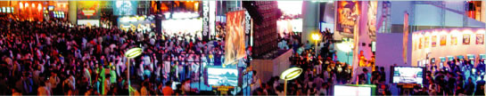
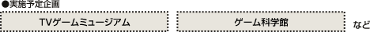

開催概要

今年、「東京ゲームショウ」はさらなる成長を求めて生まれ変わります。
ここ数年間、「東京ゲームショウ」はゲーム産業の発展と共に、その規模を拡大してきました。
昨年は出展社数148社、来場者数19万2411人という、いずれも過去最多となる実績を記録しております。
また、世界的にインパクトのある情報が多数発信されることから、各報道機関が注ぐ視線も年を追うごとにヒートアップ。
今や海外から1380人、国内外トータルでは4264人ものプレス関係者が取材に訪れ、テレビをはじめ新聞、雑誌、Webなど、多数の有力メディアで「東京ゲームショウ」の模様が報道されています。
このように各方面からの注目度の高さや、情報発信能力に優れた「東京ゲームショウ」。
こうした特徴をさらに強めるため、今回よりビジネスデイを1日増やし4日間開催とします。
開催期間の拡大で、「東京ゲームショウ」は、多角的に進化します。
まず、ビジネスデイでは国内外からのビジネス目的来場者、プレス関係者の方々が十分な商談や情報収集ができるように、さまざまな新施策を予定。
また、一般公開日では、来場者の皆様が楽しめる主催者企画を多数ご用意する方針です。
コンピュータエンターテインメントの最新情報がすべて集結し、全世界が注目する「東京ゲームショウ」。
新製品の発表やPR、販促、各種商談の場として、出展をぜひご検討ください。
{kind=link}
 開催概要
開催概要

| 名 称 : | 東京ゲームショウ2007 |
| 会 期 : |
ビジネスデイ 9月20日(木) 10：00～17:00／9月21日(金) 10：00～17:00 ※ビジネスデイはプレス関係者およびビジネス関係者のみのご入場となります。 一般公開 9月22日(土) 10：00～17:00／9月23日(日) 10：00～17:00 |
| 会 場 : | 幕張メッセ |
| 主 催 : | 社団法人コンピュータエンターテインメント協会(CESA) |
| 共 催 : | 日経BP社 |
| 後 援 : | 経済産業省(予定) |
| 来場予定者数 : | 18万人 |
| 募集小間数 : | 1550小間 |
| 入場料 : | 一般 [中学生以上] 1200円 税込 (前売券:1000円 税込) / 子供[小学生以下] 無料 |
プロモーション計画

18万人を動員する来場者プロモーション
ゲーム業界関係者（国内・海外）、コアゲームユーザー、ライトゲームユーザー、キッズ・ファミリー層、新規ユーザーの各ターゲットに即して、DM、e-DM、Web、ゲーム専門誌、コミック誌、一般情報誌、新聞折込チラシ、日経グループ発行メディア等を活用して効果的に訴求、18万人を超える来場者動員を実現します。 特に2007では、ライトゲームユーザー、ファミリー層に新規ユーザーを加えたターゲット層へのプロモーションを強化します。また、海外の業界関係者への告知もさらに強化し、東京ゲームショウの国際化を促進します。
{kind=link}
主催者企画

イベントを盛り上げる来場者向け主催者企画
昨年10周年企画として実施し好評を博した「TVゲームミュージアム」のほか、来場者のゲームへの関心をさらに高める企画を計画しています。
